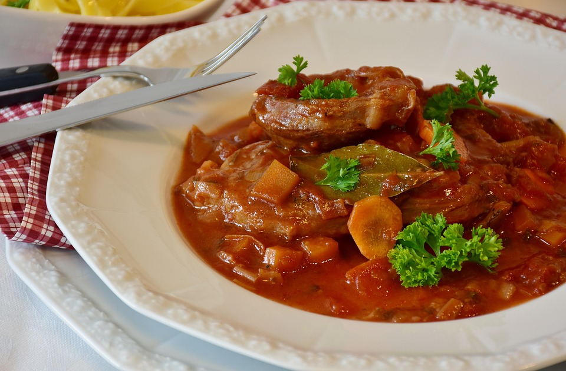

Home
Osso Buco

Description
Ingredients
- 2 pounds of veal shanks
- 1/4 cup of all purpose flour
- 1/4 cup of butter
- 2 cloves of garlic (crushed)
- 1 large onion (chopped)
- 1 large carrot (chopped)
- 2/3 cup dry white wine
- 2/3 cup beef stock
- 1 (14.5 ounce) can diced tomatoes
- salt and pepper to test
Steps
- Dust the veal shanks with flour until they are lightly covered
- Heat a large skillet and melt the butter over medium to medium-high heat. Cook the veal until browned.
- Once cooked set the shanks aside in a bowl and keep warm.
- In the same skillet, add two cloves of crushed garlic and chopped onion. Cook and stir until onion is tender.
- Return the veal to the pan and mix in the carrots and the wine. Simmer for 10 minutes.
- Pour in the tomatoes and the beef stock. Season with salt and pepper.
- Cover and simmer for 1 and 1/2 hours basting the veal every 15 minutes.
- Meat should be tender but not falling of the bone.
- Serve and enjoy!